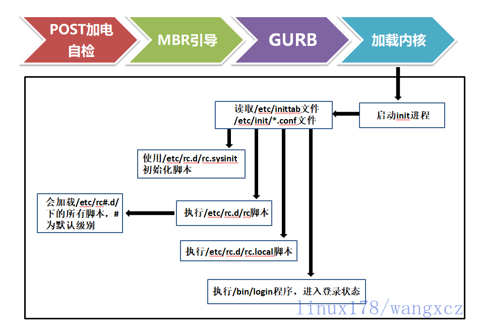

inux系统从按下电源键开始到系统启动要求用户输入用户名，中间究竟发生什么？了解Linux系统的启动
流程，不仅有助于我们更加深入的理解linux底层设计理念，更能帮助我们再出现系统启动故障时，迅速排
查出故障原因。
##
一、Linux系统启动流程
以下是CentOS6版本系统启动流程图：
（注：下文中启动流程主要适用于CentOS6之前的版本，7版本变动较大，暂不加入讨论）

CentOS6启动流程：
1.加载BIOS的硬件信息，进行POST加电自检
2.读取第一个启动设备MBR的引导加载程序(grub)的启动信息
3.加载核心操作系统的核心信息，核心开始解压缩，并尝试驱动所有的硬件设备
4.核心执行init程序，并获取默认的运行信息
5.init程序执行/etc/rc.d/rc.sysinit文件
6.启动核心的外挂模块
7.init执行运行的各个批处理文件(scripts)
8.init执行/etc/rc.d/rc.local
9.执行/bin/login程序，等待用户登录
10.登录之后开始以Shell控制主机
接下来我们对每一项流程详细讲解
1.POST：
Power-On-Self-Test，加电自检，是BIOS功能的一个主要部分。负责完成对CPU、主板、内
存、硬盘子系统、显示子系统、串并行接口、键盘、CD-ROM光驱等硬件情况检测。
2.加载MBR：
MBR：Master Boot Record，主引导记录
0磁道0扇区：512bytes
446bytes：boot loader
64bytes：分区表
16bytes：标识一个分区（最多4个分区）
2bytes：55AA（分区标识位）
bootloader：引导加载器，引导程序
主要功能有：
a）识别、加载操作系统中的核心文件，并提交到内存中运行，进而来启动对应操作系统。
b）提供菜单信息，并将启动管理功能转交给其他加载程序。
Linux：GRUB，可引导多种操作系统
windows：ntloader，只能引导windows系统
因此建议：同一台电脑装多个操作系统，先装windows，后装Linux
3.GRUB：
grub0.97（老版本）
第一阶段：MBR的前446字节
1.5阶段：MBR后续的27个扇区，加载/boot分区文件系统驱动
第二阶段：识别文件系统，加载/boot/grub目录下的文件（备份gurb的文件）
注：grup 修复命令依赖于/boot/grub下的文件
grub-install修复命令不依赖，将自动生产gurb文件下文件，
一旦用grub命令修复后，grub-install也将依赖这些文件。
/boot/grub/grub.conf grub配置文件
default=0 定义了默认启动项
timeout=5 定义了菜单超时时长
splashimage=(hd0,0)/grub/splash.xpm.gz 定义了菜单背景图片
password –md5 口令 默认无此行，添加此行后需输入正确口令才能以但用户模式破解root口令
可用grub-md5-crypt生产md5口令
hiddenmenu 默认隐藏菜单
title 定义了启动菜单，有几个title就有几个启动菜单
root（hd0,0）
krenel 定义了内核文件位置，挂载目录
initrd 定义了initramfs文件位置
4.加载内核Kernel：
探测可识别到的所有硬件设备
加载硬件驱动程序（借助于ramdisk加载驱动）
以只读方式挂载根文件系统：
/boot/initramfs-VERSION-release.img文件加载根目录文件系统驱动
/boot/grup/grup.conf文件定义了根的位置
运行用户空间的第一个应用程序：/sbin/init
内核的核心文件：
/boot/vmlinuz-VERSION-release
ramdisk：辅助的伪根系统，存放辅助性的驱动模块
CentOS 5: /boot/initrd-VERSION-release.img ramdisk虚拟磁盘
CentOS 6,7: /boot/initramfs-VERSION-release.img ramfs虚拟文件系统
mkinitrd /boot/initramfs-uname -r.img uname -r 生成新的ramfs文件
5.启动init进程：
CentOS5：
SycV：init，redhat开发
特点：启动服务程序时，有依赖的服务将被串行启动，因此centos5系统启动很缓慢
配置文件：/etc/inittab
CentOS6：
Upstart：init，ubantu开发
特点：守护进程间通信依赖于D-Bus进行，因此可基本实现类似并行启动
配置文件：/etc/inittab，/etc/init/*.conf
CentOS7：
Systemd：systemd–>init redhat开发
特点：服务只有在第一次被访问到才会启动，因此centos7系统启动过程非常快
配置文件：/usr/lib/systemd/system
/etc/systemd/system
/sbin/init CentOS6版本之前
运行级别：为系统运行或维护等目的而设定；0-6：7个级别
0：关机
1：单用户模式(root自动登录), single, 维护模式
2: 多用户模式，启动网络功能，但不会启动NFS；维护模式
3：多用户模式，正常模式；文本界面
4：预留级别；可同3级别
5：多用户模式，正常模式；图形界面
6：重启
默认级别： 3, 5
切换级别：init #
查看级别：runlevel ; who -r
6.读取/etc/inittab文件
CentOS5：
1.定义默认启动运行级别为3
2.定义了使用/etc/rc.d/rc.sysinit进行系统初始化
3.定义了每个运行级别执行的rc#文件
4.定义Ctrl-Alt-Delete组合键重启
5.配置不断电系统pf、pr两种机制
6.定义了终端数量，默认6个
7.如果是5级别，则会启动图形化界面
注意：可利用#加注释方法减少5选项中的终端数量，也可复制增加可登陆终端数量
建议：生产中建议关闭6选项组合键重启功能，防止误操作
CentOS6：
仅定义了系统默认启动运行级别，其他项分割为单个文件执行，原来与5版本一致。
/etc/init/control-alt-delete.conf
/etc/init/tty.conf
/etc/init/start-ttys.conf
/etc/init/rc.conf
/etc/init/prefdm.conf
7.读取/etc/rc.d/rc.sysinit 系统初始化文件
(1) 设置主机名
(2) 设置欢迎信息
(3) 激活udev和selinux
(4) 挂载/etc/fstab文件中定义的文件系统
(5) 检测根文件系统，并以读写方式重新挂载根文件系统
(6) 设置系统时钟
(7) 激活swap设备
(8) 根据/etc/sysctl.conf文件设置内核参数
(9) 激活lvm及software raid设备
(10) 加载额外设备的驱动程序
(11) 清理操作
/etc/init.d/
存放对应服务脚本
是rc.d文件软连接的源文件
通过执行init.d脚本，确定运行级别开启和关闭的服务
8.运行/etc/rc.d/ rc[0-6].d/对应级别目录下服务
K##*：运行级别为N时，关闭K开头的服务；##运行次序；数字越小，越先运行；数字越小的服务，通常
为依赖到别的服务
S##*：运行级别为S时，打开S开头的服务；##运行次序；数字越小，越先运行；数字越小的服务，通常
为被依赖到的服务
/var/lock/subsys
存放已启动的服务名称
9.运行/etc/rc.d/rc.local文件
rc.local会在所有服务启动后作为一个兜底的服务进行启动
注意：（1）正常级别下，最后启动一个服务S99local没有链接至/etc/rc.d/init.d一个
服务脚本，而是指向了/etc/rc.d/rc.local脚本
（2）不便或不需写为服务脚本放置于/etc/rc.d/init.d/目录，且又想开机时自动运行
的命令，可直接放置于/etc/rc.d/rc.local文件中
（3）/etc/rc.d/rc.local在指定运行级别脚本后运行
（4）可以根据情况，进行自定义修改
10、执行/bin/login程序
此时，系统完成启动，显示请输入用户名、密码
二、制定自己的init服务脚本：
方法1：
第一步：编写服务脚本
#！/bin/bash
#chkconfig: 345/- 95 5 关键一行
生效模式:345或all S编号 K编号
#description:test service
source /etc/init.d/functions 调用函数库
case $1 in
start）
[ -f /var/lock/subsys/testsrv ] && action “testsrv is started ”
touch /var/lock/subsys/testsrv
action starting testsrv
;;
stop）
rm -f /var/lock/subsys/testsrv
action testsrv is stopped
;;
status)
[ -f /var/lock/subsys/testsrv ]&&echo testsrv is starting||echo testsrv is stopped
*)
echo “Usage:service testsrv start|stop|status”
esac
第二步：放入服务目录
/etc/init.d/ 放入服务目录
第三步：添加脚本至服务
chkconfig –add testsrv 将testsrv脚本添加至服务
方法2：
也可以将开机启动服务代码添加到：
/etc/rc.d/rc[0-6]/99Slocal中执行
三、服务相关命令
chkconfig 服务状态控制
查看服务状态：
–list 列出所有独立服务
–list [name] 列出指定服务各运行模式状态
添加脚本到服务：
–add name 添加脚本到服务
注：SysV服务脚本要放置于/etc/rc.d/init.d（/etc/init.d）
#!/bin/bash
#LLLL 表示初始在哪个级别下启动，-表示都不启动
# chkconfig: LLLL nn nn
删除服务：
–del name 删除指定服务
修改服务状态：
–level 35 atd off|on 将3,5模式atd服务默认开机关闭服务，不添加模式：默认2,3,4,5
ntsysv 查看当前模式服务启动状态，*代表开机启动
–level=3 修改指定运行模式的启动服务
service 手动管理服务
[name] start|stop|restart 管理服务状态
–status-all 当前所有服务状态